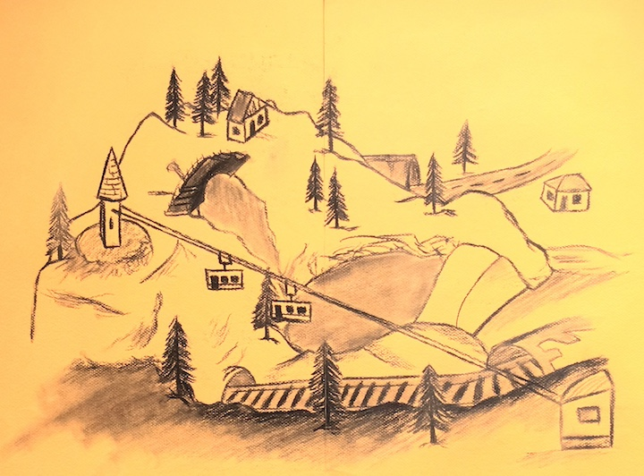
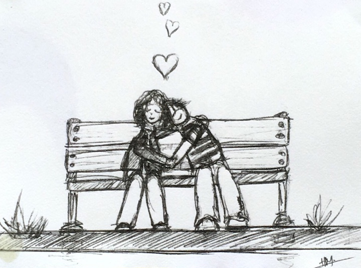
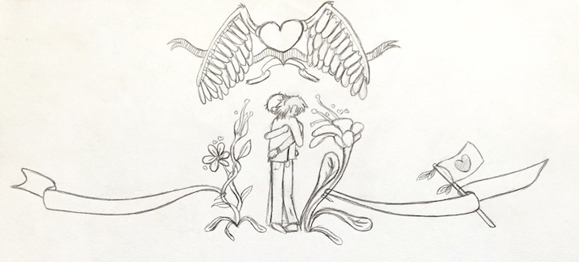
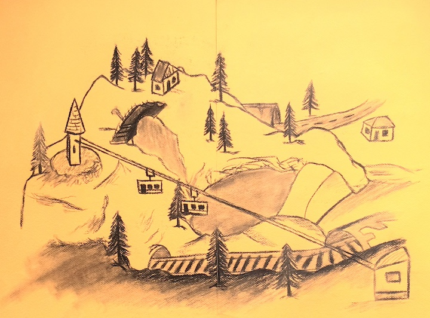
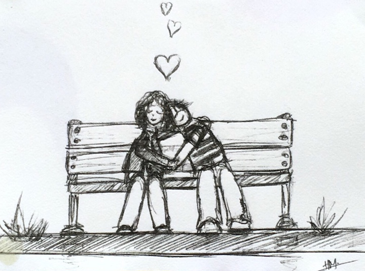
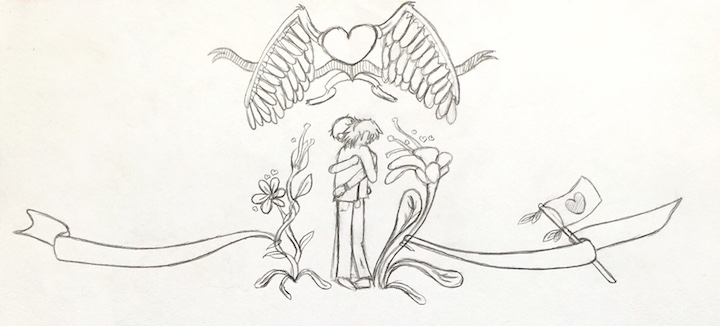
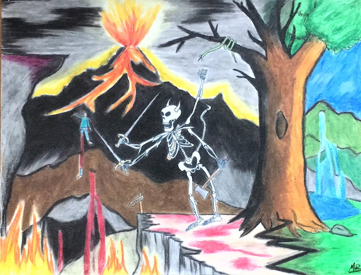
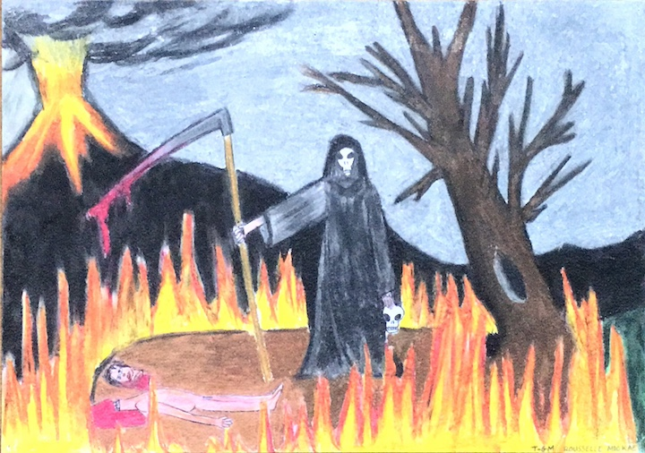
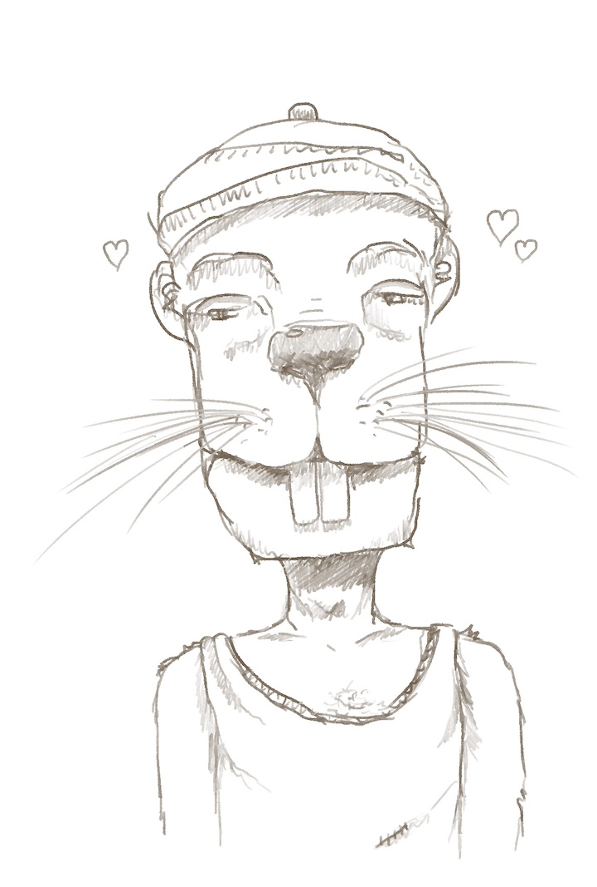
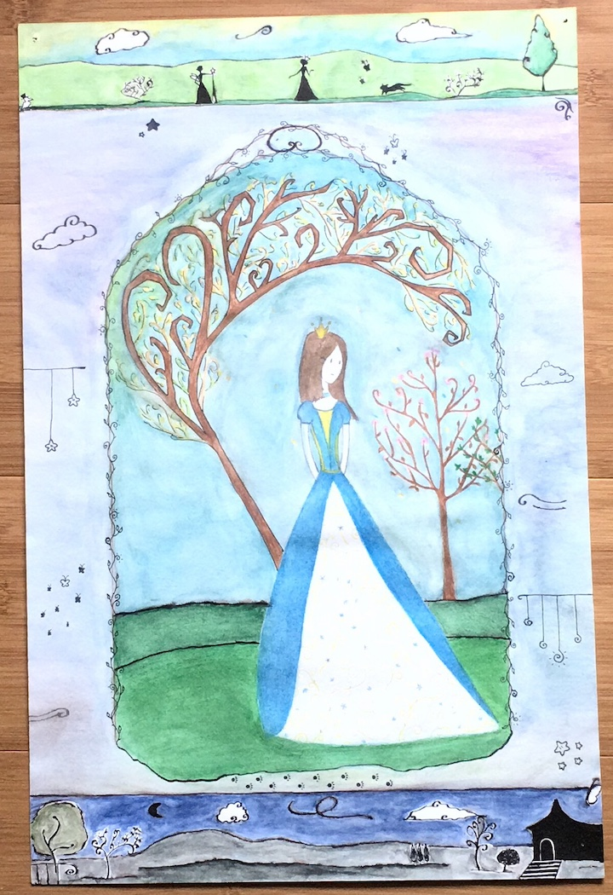

Après le grand ménage, j'ai aussi gardé des dessins de mon Précieux. Il ne souhaite plus les voir, mais je pense qu'il est important de les conserver. D'autant plus que certains sont des manifestations d'amour très touchantes.
 






Jolie frise verticale de nous deux, le coquelicot blanc et le papillon bleu. Souvenirs de tendresse et d'amour. Jeunesse passionnée.
Tout autre style, ses dessins à la craie grasse quand il était au lycée.
 Ou bien une création numérique du temps d'Haustmogunn.
Création plus récente et bien rigolote, Rodent ! Quel sacré rongeur celui-là.
Rien à voir, mais je ne savais pas où le mettre. Il s'agit d'un dessin que Maeva m'avait donné. Elle était ma meilleure amie à la fin du lycée. Dommage que nous nous soyons perdues de vue.
